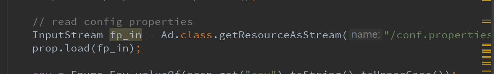
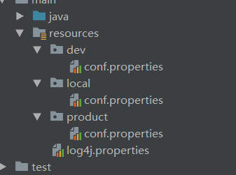

<?xml version="1.0" encoding="UTF-8"?>
<project xmlns="http://maven.apache.org/POM/4.0.0"
xmlns:xsi="http://www.w3.org/2001/XMLSchema-instance"
xsi:schemaLocation="http://maven.apache.org/POM/4.0.0 http://maven.apache.org/xsd/maven-4.0.0.xsd">
<modelVersion>4.0.0</modelVersion>
<groupId>com.huanju</groupId>
<artifactId>fast-app-statistical</artifactId>
<version>1.0-SNAPSHOT</version>
<properties>
<project.build.sourceEncoding>UTF-8</project.build.sourceEncoding>
<project.reporting.outputEncoding>UTF-8</project.reporting.outputEncoding>
<java.version>1.8</java.version>
<scala.minor.version>2.10</scala.minor.version>
<scala.complete.version>${scala.minor.version}.5</scala.complete.version>
<spark.version>1.6.0</spark.version>
</properties>
<repositories>
<repository>
<id>cloudera</id>
<url>https://repository.cloudera.com/artifactory/cloudera-repos/</url>
</repository>
</repositories>
<dependencies>
<dependency>
<groupId>com.typesafe</groupId>
<artifactId>config</artifactId>
<version>1.2.1</version>
</dependency>
<dependency>
<groupId>org.apache.spark</groupId>
<artifactId>spark-core_2.10</artifactId>
<version>1.6.0</version>
<scope>provided</scope>
</dependency>
<dependency>
<groupId>org.apache.spark</groupId>
<artifactId>spark-streaming_2.10</artifactId>
<version>1.6.0</version>
<scope>provided</scope>
</dependency>
<dependency>
<groupId>org.apache.spark</groupId>
<artifactId>spark-streaming-kafka_2.10</artifactId>
<version>1.6.0</version>
</dependency>
<dependency>
<groupId>org.apache.spark</groupId>
<artifactId>spark-sql_2.10</artifactId>
<version>1.6.0</version>
<scope>provided</scope>
</dependency>
<dependency>
<groupId>org.apache.spark</groupId>
<artifactId>spark-hive_2.10</artifactId>
<version>1.6.0</version>
<exclusions>
<exclusion>
<groupId>org.spark-project.hive</groupId>
<artifactId>hive-metastore</artifactId>
</exclusion>
<exclusion>
<groupId>org.spark-project.hive</groupId>
<artifactId>hive-exec</artifactId>
</exclusion>
<exclusion>
<groupId>org.spark-project.hive</groupId>
<artifactId>hive-cli</artifactId>
</exclusion>
</exclusions>
</dependency>
<dependency>
<groupId>mysql</groupId>
<artifactId>mysql-connector-java</artifactId>
<version>5.1.32</version>
</dependency>
<dependency>
<groupId>org.apache.hive</groupId>
<artifactId>hive-jdbc</artifactId>
<version>0.13.1-cdh5.3.3</version>
</dependency>
<dependency>
<groupId>org.apache.hive</groupId>
<artifactId>hive-exec</artifactId>
<version>0.13.1-cdh5.3.3</version>
</dependency>
<dependency>
<groupId>junit</groupId>
<artifactId>junit</artifactId>
<version>4.12</version>
<scope>test</scope>
</dependency>
<dependency>
<groupId>org.scalatest</groupId>
<artifactId>scalatest_2.10</artifactId>
<version>2.2.1</version>
<scope>test</scope>
</dependency>
</dependencies>
<build>
<plugins>
<plugin>
<groupId>org.apache.maven.plugins</groupId>
<artifactId>maven-compiler-plugin</artifactId>
<configuration>
<source>1.7</source>
<target>1.7</target>
<encoding>utf8</encoding>
</configuration>
</plugin>
<plugin>
<groupId>org.scala-tools</groupId>
<artifactId>maven-scala-plugin</artifactId>
<version>2.15.2</version>
<executions>
<execution>
<id>scala-compile-first</id>
<goals>
<goal>compile</goal>
</goals>
<configuration>
<includes>
<include>**/*.scala</include>
</includes>
</configuration>
</execution>
<execution>
<id>scala-test-compile</id>
<goals>
<goal>testCompile</goal>
</goals>
</execution>
</executions>
</plugin>
<plugin>
<groupId>org.apache.maven.plugins</groupId>
<artifactId>maven-assembly-plugin</artifactId>
<version>2.5.4</version>
<configuration>
<descriptorRefs>
<descriptorRef>jar-with-dependencies</descriptorRef>
</descriptorRefs>
</configuration>
<executions>
<execution>
<phase>package</phase>
<goals>
<goal>single</goal>
</goals>
</execution>
</executions>
</plugin>
</plugins>
<resources>
<resource>
<directory>src/main/java</directory>
<includes>
<include>**/*.xml</include>
</includes>
</resource>
<resource>
<directory>src/main/java</directory>
<includes>
<include>**/*.properties</include>
</includes>
</resource>
<resource>
<directory>src/main/resources</directory>
<!-- 跳过目录 -->
<excludes>
<exclude>local/*</exclude>
<exclude>product/*</exclude>
<exclude>dev/*</exclude>
</excludes>
</resource>
<resource>
<directory>src/main/resources/${dev.environment}</directory>
</resource>
</resources>
</build>
<profiles>
<profile>
<!--本地环境-->
<id>local</id>
<properties>
<dev.environment>local</dev.environment>
</properties>
<dependencies>
<!-- 导入不同的依赖-->
<dependency>
<groupId>org.apache.kafka</groupId>
<artifactId>kafka_2.10</artifactId>
<version>0.8.2.1</version>
<!--<version>0.10.0.0</version>-->
</dependency>
<dependency>
<groupId>org.apache.spark</groupId>
<artifactId>spark-streaming-kafka_2.10</artifactId>
<version>${spark.version}</version>
</dependency>
</dependencies>
<activation>
<!--默认激活的环境-->
<activeByDefault>true</activeByDefault>
</activation>
</profile>
<profile>
<!--生产环境-->
<id>product</id>
<properties>
<dev.environment>product</dev.environment>
</properties>
<dependencies>
<dependency>
<groupId>org.apache.spark</groupId>
<artifactId>spark-streaming-kafka_2.10</artifactId>
<version>${spark.version}</version>
</dependency>
</dependencies>
<build>
<plugins>
<!--跳过编译-->
<plugin>
<groupId>org.apache.maven.plugins</groupId>
<artifactId>maven-compiler-plugin</artifactId>
<configuration>
<source>1.8</source>
<target>1.8</target>
<skip>true</skip>
</configuration>
</plugin>
<plugin>
<groupId>org.apache.maven.plugins</groupId>
<artifactId>maven-surefire-plugin</artifactId>
<version>2.20</version>
<configuration>
<includes>
<include>**/*Test.java</include>
</includes>
<skipTests>true</skipTests>
</configuration>
</plugin>
</plugins>
</build>
</profile>
</profiles>
</project>